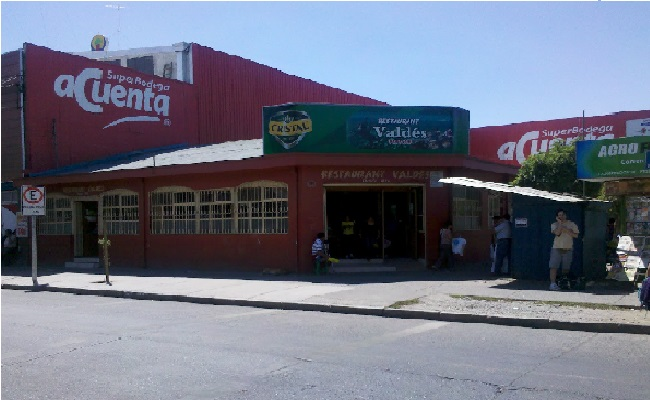
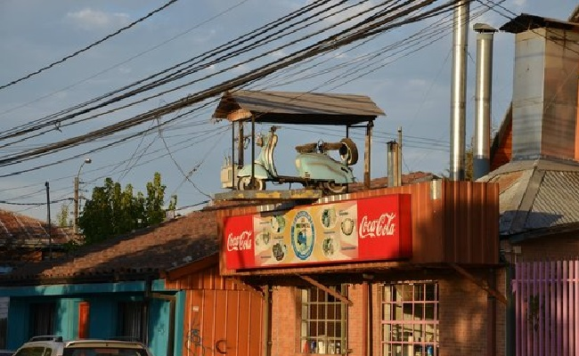
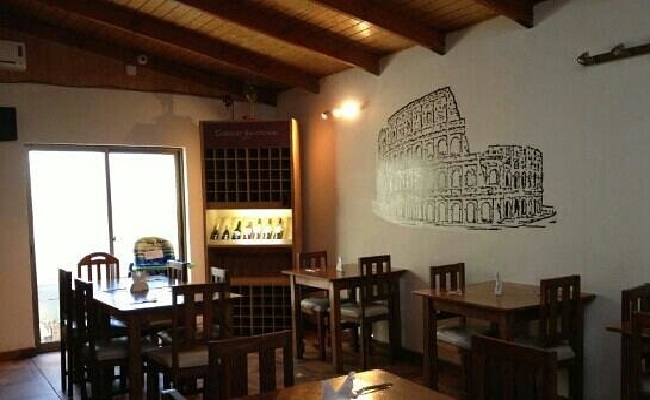
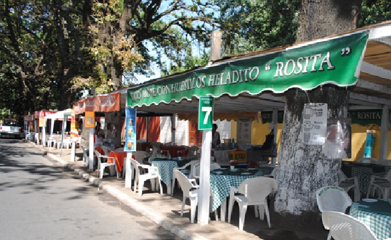
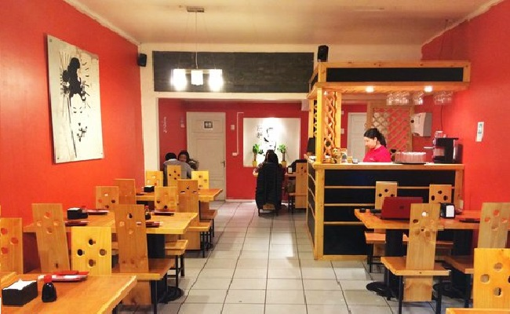
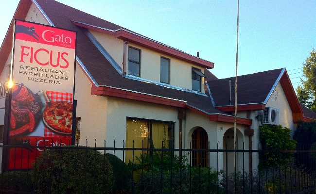

Tus Mejores Lugares
Restaurant Valdés
Restaurant Valdes ofrece una gran variedad de gastronomía chillaneja.
Restaurant La Motoneta
La Motoneta cuenta con una variada carta que incluye comida casera, carne, pescados y mariscos, pastas, comida peruana y variados postres. Haciendo muy atractiva la atención a empresas y otros. Lo que hace que sea conocida a nivel nacional e internacional, visitada habitualmente por turistas extranjeros.
Pizzería Donatello
Donatello ofrece productos y servicios gastronómicos de primer nivel, elaborados por un personal capacitado y con experiencia en la preparación de pizzas artesanales y pastas frescas de elaboración propia, brindando así un servicio de calidad, asequible para personas de todos los rangos de edad, gustos y preferencias.
Las Moteras de Chillán
Son quince puestos ubicados en la avenida O´Higgins con Collin, que en su totalidad son administrados por mujeres emprendedoras que con sus delantales blancos y agitando sus manos a los automovilistas se han ganado un espacio muy importante dentro de la ciudad, siendo reconocidas a nivel nacional, convirtiéndose como un punto de referencia para los turistas que visitan cada año la ciudad. Tres son las opciones para elegir que ofrecen estas mujeres: mote con huesillo grande a $2.500; mediano a $1.500 y $1.000 para los más pequeños. Todos servidos en vasos shopperos con hielo a quienes lo deseen.
Akami Sushi-Delivery Chillán
Akami ofrece una amplia gama de combinaciones de sushi para degustar a todos los paladares. Expertos en sushi, excelencia en sabor.
Restaurant Ficus Chillán
Ficus ofrece el mejor espacio para disfrutar de una buena comida.